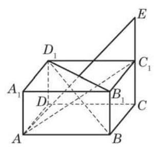
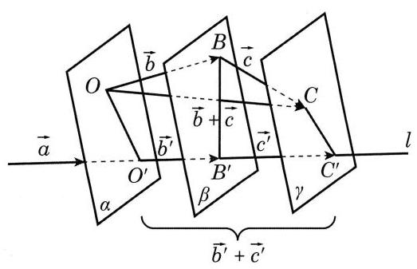

我们已学习了平面上的向量，讨论了平面

空间向量 及其应用
向量的运算规则及其坐标表示, 并用于解决一些来自数学其他分支和其他学科领域中的问题, 特别是平面几何问题.
本章将在空间中讨论向量. 本章学习和理解的重点是空间中的向量与平面上的向量有哪些类同和差异, 包括哪些空间的问题可以转化到平面上处理. 我们将会看到空间向量的理论为解决立体几何问题提供了一个有效手段. 通过本章的学习，大家要进一步感受数形结合、 利用代数知识解决几何问题的数学思想方法.
我们已经知道, 向量是既有大小又有方向的量, 它可以用有向线段来表示. 必修课程第 8 章 “平面向量” 中, 讨论的是同一个平面中的有向线段所表示的向量. 本章将去掉这一限制, 考虑可以用空间任何有向线段表示的向量.
我们可以仿照必修课程第 8 章, 对空间向量做一系列定义, 给出一系列法则, 推导一系列性质. 但这将是一个冗长而无趣的过程, 几乎原原本本地复述必修课程第 8 章前两节. 我们放弃了这样的做法, 取而代之的是把基础框架的建立尽可能地归结到平面上, 然后再探索在空间讨论向量所遇到的新问题. 归结到平面的过程也是对必修课程第 8 章的复习，为同学们进一步学习空间向量做好铺垫.
首先注意到，在必修课程第 8 章“平面向量”中，虽然仅仅讨论平面上的向量, 但许多定义都没有特别冠以“平面”二字, 有关的概念实际上都适合于本章的讨论, 这些概念包括: 向量的模、 单位向量、零向量、平行向量、相等向量、负向量等.
为进一步把空间向量问题归结到平面上讨论, 需要引入共面向量的概念: 如果一组向量可以平移到同一个平面上, 那么称这组向量是共面的. 显然, 任意两个向量都是共面的.
虽然空间向量的加法结合律涉及三个向量, 它们可能不共面, 但每一步加法都只涉及两个向量, 可以用平面向量加法法则来证明此定律成立: 先把空间任意三个向量平移为首尾相接的向量 与 ,因为 与 共面, 与 共面,我们得到
同理, . 这就证明了空间向量的加法结合律.
有了加法结合律, 我们可以求空间向量的连加, 而不必顾及式中的括号，而且向量加法的 “首尾规则” 对空间向量依然成立:若干个起点、终点依次相接的向量的和是以第一个向量的起点为起点, 以最后一个向量的终点为终点的向量. 结合律的证明过程略加推广就证明了 “首尾规则”.

图 3-1-1
例题 1
例 1 如图 3-1-1,在正方体 中, 为棱 上任意一点. 只考虑图上已作出线段所对应的向量, 分别写出:
(1) 的相等向量， 的负向量；
(2)用另外两个向量的和或差表示 ；
(3)用三个或三个以上向量的和表示 (举两个例子).
答案与解析收起 / 展开
解(1)根据正方体棱与棱之间的关系， 的相等向量有 的负向量有 .
(2)此小题用“首尾规则”求解. 如果只在含 的三角形中考虑,有 ,
如果考虑 的相等向量所在的三角形,那么可以有更多的解答, 请同学们自行补出.
(3)此小题用“首尾规则”求解，有许多不同的答案，以下是两个例子:

图 3-1-2
例题 2
例 2 如图 3-1-2,在长方体 中,点 在棱 的延长线上,且 . 设 , ,试用 的线性组合表示下列向量:
(1) ；(2) ；(3) ；(4) .
答案与解析收起 / 展开
练习 3.1(1)
练习3.1(1) · 1
答案与解析收起 / 展开
- 空间向量可以任意平行移动, 所以没有异面向量概念.
练习3.1(1) · 2
- 如图, 请在图中找出三个不共面的向量.

(第 2 题)
答案与解析收起 / 展开
练习3.1(1) · 3
- 化简下列算式:
(1) ；
(2) .
向量的数量积对向量加法的分配律也涉及三个向量, 它们可能不共面，但是可以仿照平面向量中分配律的证明(见必修课程 8.2 节)给出空间向量情形的证明, 见练习 3.1(2)第 1 题.

图 3-1-3
答案与解析收起 / 展开
例题 3
例 3 如图 3-1-3,已知正方体 的棱长为 是棱 的中点.
(1)求 ；
(2)求 ；
(3)求 与 的夹角的大小；
(4)判断 与 是否垂直.
答案与解析收起 / 展开
解 (1) 由 与 ,得
再根据向量数量积的定义, 得
(2)因为
并注意到 以及 , 所以
Q
(3)由(1)类似的方法，可得
例 3(3) 也可以用解三角形的方法求解.
又由 与 两两互相垂直且模均为 ,得
从而
所以
例 3(4) 可以用三垂线定理证明, 但三垂线定理是立体几何中有一定深度的内容, 本身的证明比较困难. 不过, 本章将用空间向量给出三垂线定理的一个简单证明 (本章 3.4 节例 1).
(4)由于 ,且 ,因此
由此可知 .
例题 4
例 4 底面是平行四边形的棱柱称为平行六面体, 其特点是六个面都是平行四边形, 且两两互相平行. 如图 3-1-4, 在平行六面体 中,点 在对角线 上,且 ,点 在对角线 上,且 . 求证: 三点共线.

图 3-1-4
答案与解析收起 / 展开
证明 令 ,则
所以, . 又因为
所以
由此可知, ,所以 .
因为点 为 与 的公共起点,所以 三点共线.
练习 3.1(2)
练习3.1(2) · 1
- 如图,棱长为 的正四面体 中, 为棱 的中点. 求 与 .

(第 1 题)
答案与解析收起 / 展开
练习3.1(2) · 2
答案与解析收起 / 展开
- 由于空间向量在一条直线上的投影是其起点的投影指向终点的投影的向量, 必修第二册第 107 页上关于向量投影的和等于和的投影的证明完全适合于空间向量的情况 (不过, 图 8-2-5 最好改成显示空间向量的情况的图 3- R4,图中平面 分别是过点 且垂直于直线 的平面,是为了让学生更好地建立空间图形的感觉而加上的), 于是, 如必修第二册第 108 页所说, 向量的数量积对向量加法的分配律就成立 (细节补充参看必修第二册教学参考资料第 71 页).

图 3-R4
习题 3.1
A 组
习题3.1A · 1
- 在长方体 中, . 写出:
(1)与 有相等模的向量；
(2) 的相等向量；
(3)与 垂直的向量.
答案与解析收起 / 展开
1.(1)与 有相等模的向量为: .
(2) .
(3)略.
习题3.1A · 2
- 如图,在直三棱柱 中, . 将向量 表示为 的线性组合.

(第 2 题)
答案与解析收起 / 展开
习题3.1A · 3
- 如图,在正方体 中, 是 的中点,点 在 上,且 . 试用向量 与 的线性组合表示 .

(第 3 题)
答案与解析收起 / 展开
习题3.1A · 4
- 已知 与 的夹角都是 ,且 . 计算:
(1)(3 ；
(2) .
答案与解析收起 / 展开
习题3.1A · 5
答案与解析收起 / 展开
习题3.1A · 6
- 如图，在四面体 中， 、 、 分别是棱 、 的中点, 分别是棱 的中点, 是线段 的中点. 试判断下列各组中的三点是否共线:
(1) 、 、 ；
(2) 、 、 .

(第 6 题)
答案与解析收起 / 展开
- (1)G、 、 共线,证明略. (2) 、 、 共线,证明略.
B 组
习题3.1B · 1
- 如图, 是 所在平面外一点, 是 的重心. 求证: .

(第 1 题)
答案与解析收起 / 展开
习题3.1B · 2
- 如图,在三棱锥 中, ,
(1)求 ，并说明异面直线 与 所成的角 的大小在棱 长度增大时是怎样变化的；
(2)若 ，判断点 在平面 上的射影是否可能在直线 上，给出你的结论并加以证明.

(第 2 题)
答案与解析收起 / 展开
- (1) ,所以线段 增长时, 减小. 又 在 上是减函数,所以线段 增长时, 角 增大.
(2)点 在平面 上的射影不可能在直线 上. 证明略.
习题3.1B · 3
- 在空间中还可以讨论一个向量 在一个平面 上的投影. 如图,若 ,点 与点 在平面 上的投影分别是点 与点 ,则 在平面 上的投影就是向量 . 现在给定向量 、平面 以及平面 上的非零向量 . 设向量 在平面 上的投影是向量 ，向量 在向量 方向上的投影是向量 . 求证:向量 是向量 在向量 方向上的投影.

(第 3 题)
答案与解析收起 / 展开